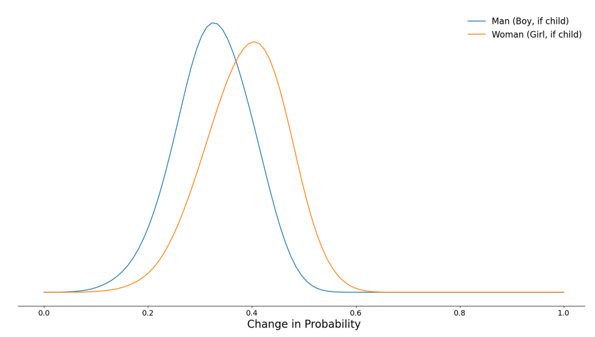
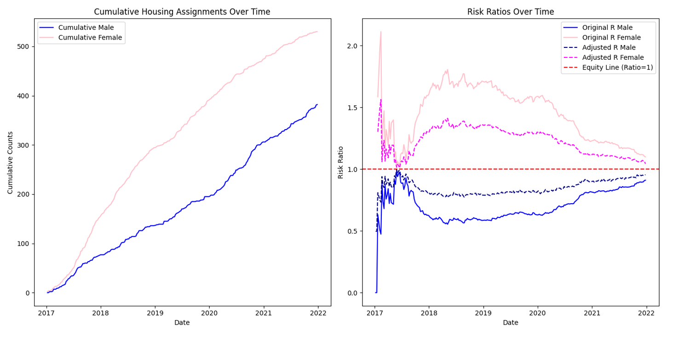

Optimizing Housing Interventions for Equitable Homelessness Reduction
📌 TL;DR
- Derived mathematical relationship between housing intervention prioritization and treatment effects for exiting homelessness
- Used this mathematical relationship to identify a misalignment between the department of Housing and Urban Development(HUD) policy objectives and optimal resource allocation
- Developed an optimization framework that balances maximizing exits from homelessness with equitable resource allocation
- Created a dynamic weighting algorithm that ensures Fair Housing Act compliance
- Achieved resource allocation that maximizes exits from homelessness while maintaining equity ratios within ±5% of parity
Overview
In 2023, over half a million people in the United States experienced homelessness on a single night, with this population continuing to grow despite substantial government funding. Nevertheless, these resources remain insufficient to meet the need.
Continuums of Care, the local agencies overseeing housing assistance, must prioritize households based on observable characteristics for reciept of scarce housing resources. HUD’s current recommendations direct prioritization scores to be based on barriers to obtain housing and household vulnerabilities. When housing slots become available, households with the highest prioritization scores are selected for interventions such as rapid rehousing (RRH), transitional housing (TSH), or permanent supportive housing (PSH). Due to resource constraints, most eligible households do not receive housing interventions.
This project addresses a critical question in homelessness policy: How can we allocate scarce housing interventions to maximize successful exits from homelessness while ensuring an equitable distribution across protected demographic groups?
Building on the work of Kube et al. (2023), this project developed and expanded an optimization framework that not only maximizes system efficiency but also incorporates equity constraints to prevent disparate impacts. This approach demonstrates how data science can support effective policymaking and balance competing policy objectives. A full write-up is available here
Key Insights
Analysis of housing intervention data revealed three critical findings:
Policy misalignment: Current HUD prioritization guidance (CPD-17-01) emphasizes barriers to obtainin housing and vulnerability factors rather than their responsivness to housing interventions, as measured by change in the likelihood of a successful exit in response to a housing intervention. Focusing on a household’s response to housing interventions aligns with the objective of exiting the greatest number of people from homelessness. Approaches that do not focus on a household’s responsiveness to interventions may reduce overall system effectiveness.
Intervention effectivness disparities: The effectiveness of interventions, i.e. conditional average treatment effects (CATEs), vary significantly across demographic groups. For example rapid rehousing shows a stronger positive impact on the likelihood of a successful exit from homelessness for female-identifying heads of households (see Figure 1). Simulated intervention effectiveness may be used as an exploratory data analysis tool for understanding potential disproportionate assignment to housing interventions.
Equity-efficiency tradeoff: Without adjustment, allocating housing interventions based purely on maximizing exits from homelessness creates inequitable resource distributions. Risk-ratio penalization in the optimiztion cost function can balance the trade-offs inherent between the most efficient allocations, as measured by the most number of exiting households, and equitable allocations.
Results
Our report demonstrates that maximizing the number of households exiting homelessness requires strategic allocation of housing resources. Specifically, interventions should be directed toward households with the greatest increase in their likelihood of exiting homelessness when receiving support versus none.
Figure 1 below depicts the distribution of the change in the likelihood of exiting homelessness (.i.e. CATEs) for rapid rehousing by whether the head of household identified as female or male. Figure 1 clearly shows that female-identifying households are more responsive to housing interventions.
Figure 1: Rapid Re-Housing Treatment Effects by Gender

Based on Figure 1, a naïve implementation of the optimization algorithm proposed by Kube et al. (2023) would prioritize female-identifying heads of households for rapid rehousing (RRH), as they show higher predicted treatment effects. While this would increase overall exits from homelessness, it would result in inequitable resource allocation.
Our approach addresses this by leveraging the sequential nature of housing intervention availability. As slots open over time, we track cumulative allocations by subgroup and adjust the optimization objective using a dynamic penalty for over- or under-representation. This ensures more equitable distribution of resources across groups without sacrificing performance.
A risk ratio is the proportion of a subgroup’s intervention assignments relative to their proportion in the overall population. A risk ratio of 1 indicates perfect parity, while values above or below 1 reflect over- or under-assignment, respectively.
Figure 2 shows the cumulative allocation of housing interventions over time for male and female-identifying heads of households, alongside their corresponding risk ratios. The plot on the right illustrates the shift in risk ratios before and after applying equity weights.
Figure 2: Equity-Weighted Optimization Results (C=0.49)

By applying a weighting factor, the model maintained risk ratios within ±5% of parity while still maximizing exits from homelessness. The final equity-weighted model achieved risk ratios of 0.96 for male-headed households and 1.04 for female-headed households, demonstrating both strong system performance and equitable allocation.
Methods
Overview
This study develops a method for allocating scarce housing interventions in a way that maximizes the number of households exiting homelessness. The method is based on the optimization framework proposed by Kube et al. (2023) and is extended to address equity concerns under the Fair Housing Act.
The methodology consists of three steps:
- Estimate exit probabilities for each household with and without intervention.
- Optimize intervention assignments to maximize expected exits from homelessness.
- Introduce equity constraints to ensure fair allocation across protected subgroups.
Predicting Exit from Homelessness
We trained predictive models to estimate the likelihood that a household exits homelessness under different treatment conditions. The models predict the binary outcome of a successful exit (i.e., stable housing with no reentry within six months).
Several configurations were tested:
- Algorithms: Random Forest, Elastic Net
- Feature sets: head-of-household variables, aggregated household variables, and both
- Encodings: one-hot encoding and weight-of-evidence
- Transformations: standardization, log transformation of skewed variables
- Dimensionality reduction: with and without PCA (retaining 95% variance)
A Random Forest classifier performed best, with an AUROC of 0.84 on validation data.
Optimization to Maximize Exits
Let:
- \(p_{ijt}\) be the predicted probability that household \(i\) exits homelessness in week \(t\) if assigned intervention \(j\). No intervention is included in the set of of “interventions” J, and corresponds to \(j=0\)
- \(x_{ijt}\) be a binary indicator of whether household \(i\) is assigned intervention \(j\) in week \(t\)
- \(C_{jt}\) be the number of available slots for intervention \(j\) in week \(t\)
The objective is to maximize the expected number of exits:
\[ \max_{x_{ijt}} \sum_{i=1}^{N} \sum_{j} p_{ijt} \cdot x_{ijt} \]
Subject to:
- Capacity constraints: \(\sum_i x_{ijt} = C_{jt}\) for all \(j \ne 0\)
- One intervention per household: \(\sum_j x_{ijt} = 1\)
- \(x_{ijt} \in \{0, 1\}\)
This integer program is solved weekly as new capacity becomes available.
Role of Conditional Average Treatment Effects (CATE)
In a simplified setting (one intervention, two households, one slot), the optimization reduces to selecting the household with the largest difference in predicted outcomes with vs. without treatment:
\[ \max \left[ x_{1,\text{tx}}(p_{1,\text{tx}} - p_{1,\text{ntx}}) + x_{2,\text{tx}}(p_{2,\text{tx}} - p_{2,\text{ntx}}) \right] \]
Subject to:
\[ x_{1,\text{tx}} + x_{2,\text{tx}} = 1 \]
Thus, we assign the intervention to the household with the largest conditional average treatment effect.
Incorporating Equity
To avoid disproportionately assigning interventions to certain subgroups, we track assignment rates over time and modify the optimization.
Let:
- \(\alpha_g\) be the historical proportion of group \(g\)
- \(\gamma_{gt^*}\) be the cumulative assignment rate to group \(g\) up to time \(t^*\)
- \(r_{gt^*} = \gamma_{gt^*} / \alpha_g\) be the risk ratio
We introduce an equity penalty weighted by a tunable hyperparameter \(C\):
\[ \max_{x_{ijt}} \sum_{i,j,t} p_{ijt} \cdot x_{ijt} + \sum_{j \ne 1} C \cdot (1 - r_{gt^*}) \cdot x_{ijt} \]
- When a group is under-assigned, \(r_{gt^*} < 1\), and the penalty is positive — boosting that group’s priority.
- When over-assigned, the penalty is negative.
We select \(C\) by grid search to ensure long-run risk ratios remain within ±5% of parity across groups.
Practical Considerations
- A short “burn-in” period may be needed to stabilize risk ratios before applying equity weights.
- Alternatively, historical assignment data can be used to initialize risk ratios.
- Administrators can monitor and adjust the weights dynamically as population needs and effectiveness change.
Technical Challenges and Solutions
Several technical challenges were addressed during this project:
Data quality issues: Like many social service datasets, the homelessness data contained substantial missing values, particularly for exit destinations (69% unknown for non-intervention cases). This required careful handling to prevent biased estimates.
Causal inference: The observational nature of the data required careful consideration of selection bias. The programmatic design of housing intervention assignment provided a pseudo-randomization mechanism conditional on observable characteristics.
Dynamic optimization: The algorithm needed to respond to changing population compositions over time, requiring a burn-in period to establish stable risk ratios.
Policy Implications
This work has several important implications for homelessness policy:
Current HUD prioritization guidance may need revision to better align with the goal of maximizing successful exits from homelessness
Machine learning approaches can significantly improve resource allocation efficiency, but must be carefully designed to avoid perpetuating inequities
Continuous monitoring and adjustment of allocation algorithms is necessary to maintain equity as population compositions change
Acknowledgments
This analysis builds upon the work of Kube et al. (2023) on efficient allocation of homelessness resources. All data was provided by a large Continuum of Care through their Homelessness Management Information System (HMIS). Trevor Gratz ideated, scoped, developed the connection between optimizations and CATEs, created the penalized optimization algorithm, and wrote the associated paper. Anu Zan implemented the optimization algorithm and created Figure 3.
References
Kube, A. R., Das, S., & Fowler, P. J. (2023). Fair and efficient allocation of scarce resources based on predicted outcomes: implications for homeless service delivery. Journal of Artificial Intelligence Research, 76, 1219-1245.
Auditor of the State of California (2024, April). Homelessness in California. Report 2023-102.1
Chelmis, C., Qi, W., & Lee, W. (2021, April). Challenges and opportunities in using data science for homelessness service provision. In Companion proceedings of the web conference 2021 (pp. 128-135).
Meyer, B. D., Wyse, A., & Logani, I. (2023). Life and death at the margins of society: the mortality of the US homeless population. National Bureau of Economic Research.